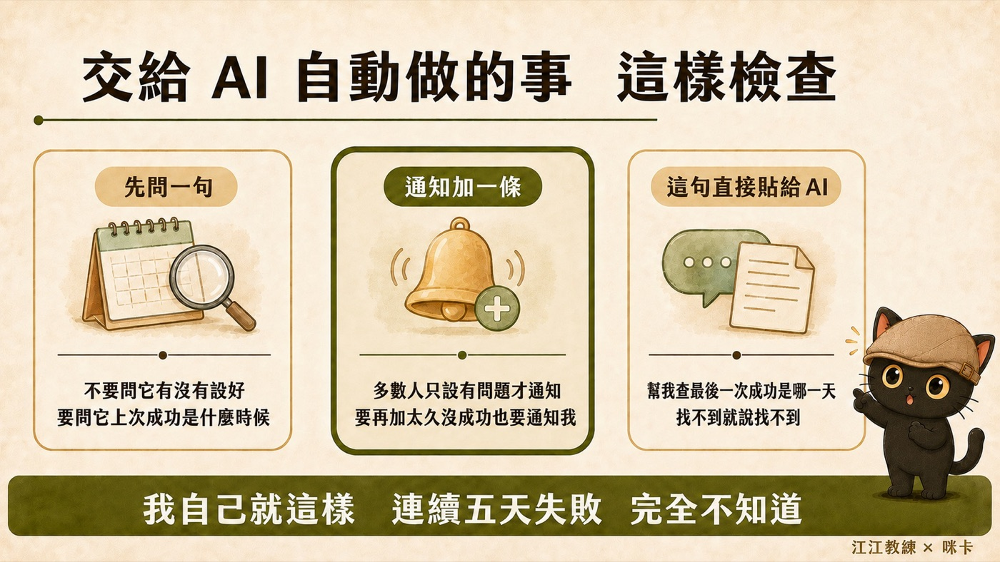

我的知識庫有一套自己設計的規則，也叫 AI 照著做。這篇講一件我這次才真正看清楚的事：規則寫得再清楚，AI 也不一定會照做，而且你通常不會發現。我靠一個很久沒開的舊工具看出破洞，然後把修法從「叫 AI 補資料」換成「給規則掛一顆引擎」。文末有一組三個問題的檢查法和一段可以直接貼給 AI 的提示詞，你可以拿去盤自己的規則。
- 已經在用 AI 整理資料、寫了一些規則給它，但心裡隱約覺得它沒有每次都照做的人
- 用 Obsidian 或 Notion 建過知識庫，後來交給 AI 之後就很少打開的人
- 幫客戶或團隊設計 AI 流程，需要一個方法判斷「這條規則到底有沒有在執行」的專業工作者
- 一個判斷法：看到規則沒被執行，先問三個問題，再決定要補資料還是補機制
- 三種「引擎」的白話對照表，知道一條規則可以掛在哪裡才會自己跑
- 一段提示詞，貼給你的 AI，讓它幫你盤點規則檔裡有哪幾條只是寫開心的
我很久沒打開 Obsidian 了，但每一兩個月會打開一次
以前 Obsidian 是我整理文件最重要的軟體。現在我幾乎不開它，因為文件整理都交給 AI 做了。
但我每一兩個月還是會打開來看一下。原因很簡單：AI 你指定得再清楚，不等於它會很認真的照著你說的做。
我的知識庫用的是一套叫「標籤連結法」的做法，每份檔案掛幾個受控的標籤，標籤本身也是一張卡片，所以檔案跟檔案之間會透過標籤連起來。Obsidian 有一張圖譜，會把所有檔案畫成點、把連結畫成線。只要規則有被照做，每個點都應該連在某個地方。
- 資料越堆越多，AI 反而找不到怎麼辦？：標籤連結法 Tag Wiki 那篇講怎麼建這套標籤，這篇講建好之後怎麼用圖譜驗 AI 有沒有照做
這次打開，一大片孤島
這次打開圖譜，外圈是一大圈沒有連線的點。我算了一下：圖譜畫了 15,555 個檔案，其中 6,189 個是孤島，四成。
我請 AI 去查原因，查出來四件事，性質完全不同。
第一，有些東西本來就不該畫進來。備份資料夾、垃圾桶、客戶交付的原始檔、機器自己產的記錄，全部被畫進圖裡。這跟規則有沒有執行無關，是圖譜沒有設過濾。設了過濾之後，畫進圖的檔案從 15,555 降到 6,931。
第二，有一類檔案是我自己規定不要連的。我之前有一條規則說技能包的操作檔不進標籤連結法，怕汙染圖譜。這次我改了主意：技能包首頁加一行標籤、檔尾自動生成本包的檔案清單，每一包自己連自己的就好，其他分頁不動。技能包區的孤島從 720 個降到 3 個。
第三，標籤掛了，但等於沒掛。字典裡收了 24 個詞，AI 也乖乖拿去當標籤用了，可是這 24 個詞在受控詞彙表裡沒有對應的卡片。Obsidian 找不到目標檔，就把那條連結當成不存在，一條線都不畫。大約 500 條標籤就這樣掛了等於沒掛。你可以想成：名單上有這個詞，但那個詞自己的那一頁還沒建，所以怎麼連都連不過去。補了 24 張卡，線就回來了。
第四，這個是真正的病。我的規則檔裡早就寫著：工作日記資料夾一定要掛「工作日記」標籤、觀點日記資料夾一定要掛「觀點日記」標籤，靈感筆記也算觀點日記。這條規則七月就寫好了。結果靈感筆記資料夾 28 篇，一篇都沒掛。
為什麼我明明規劃好了，它卻沒有照著執行
第四件事讓我停下來想。規則在檔案裡，AI 每次開工都會讀到那份檔案，為什麼兩個月來 28 篇沒有一篇照做？
答案很無聊：因為沒有任何東西在檢查這件事。規則寫在那裡，AI 讀過，然後寫檔的時候忘了，沒有人擋、沒有人提醒、事後也沒有人對帳。規則跟執行之間是空的。
這不是第一次。八月底（2026-08-25）我做知識庫月度健檢的時候，抽查了 11 條登記在冊的機制，有 6 條的登記表上寫著「健檢的時候會檢查」，但健檢的執行手冊裡根本沒有那個步驟。兩本人工維護的帳，各寫各的，立規則的時候往登記表寫一句「健檢保底」，就以為保了。
所以我覺得比補那 28 篇更重要的，是找出為什麼我明明都規劃好了，它卻沒有照著執行，然後給它一個以後可以自動執行的模式。一次一次，把機制改得更完整。
- 規則檔越寫越長，AI 有照做嗎？：你寫的規則大部分沒在執行 那篇講規則太多會復胖、怎麼精簡，這篇講精簡之後剩下的那些要怎麼保證會跑
- AI 寫的東西我怎麼確認它是對的？：抓到 AI 偷懶之後，我把它寫進流程規則 那篇是抓到之後寫成規則，這篇是規則寫了還是沒跑，要再往下掛一層
機制要掛引擎 才會執行
我在自己的規則主檔裡有一條鐵則，七月中立的，叫「機制觸發器鐵則」。內容一句話：任何要持續執行的規則，必須掛在三種引擎之一，掛不上就不算常設機制，只能算一次性任務或參考規範。
三種引擎，用白話講：
| 引擎 | 白話 | 什麼時候用 |
|---|---|---|
| Hook（鉤子） | AI 寫檔的當下，有一支小程式擋一下或提醒一下 | 漏了代價高、會重複犯的規則 |
| 事件掛載 | 在既有流程的收尾多加一步，跟著原本的流程一起跑 | 規則跟某個固定流程綁在一起 |
| 排程 | 每個月固定跑一次體檢，把漏掉的列出來 | 即時擋不了、或其他 AI 不受 Hook 管的部分。不會寫程式、環境沒有 Hook 的人，先掛這個就好，它是門檻最低的引擎 |
這條鐵則是我自己寫的。但這次一查，這輪整理出來的四個機制，只有一個真的掛了引擎，其他三個都停在「規則靠 AI 記得」，跟那 28 篇是同一種病。
| 這次立的機制 | 整理前 | 整理後 |
|---|---|---|
| 特定資料夾必備標籤 | 只有規則檔一行字 | Hook：寫檔當下缺標籤就提醒 |
| 技能包首頁的標籤行與檔案清單 | 規則檔寫「新增技能包後必須重跑生成器」 | Hook 即時提醒＋技能包更新流程收尾多一步＋月度健檢 |
| 資料夾索引中樞 | 無 | 月度健檢重驗 |
| 字典詞必有卡片 | 無 | 改字典的既有 Hook 後面接一段檢查＋月度健檢 |
補完引擎，我在機制登記表加了四行。那張表只有四個重要欄位：機制叫什麼、引擎是什麼、什麼時候該觸發、上次跑過的證據在哪。這樣下個月健檢的時候，AI 讀到這四行就知道要去驗，不必靠我記得。
有一件小事讓我確定這條路是對的。技能包那支檢查器寫好的當天第一次跑，就抓到一筆真的漂移：另一個 AI 工作視窗當天幫某個技能包新增了一個分頁，首頁的檔案清單沒更新。規則檔上明明寫著「新增分頁後必須重跑生成器」，它沒跑。檢查器寫好第一次跑，就抓到第一條。
順帶一提，這套想法不是我發明的。軟體工程界的 pre-commit hook、CI 檢查，做的就是同一件事：規則不靠人記得，靠寫進流程的機器去驗。看不懂這兩個詞沒關係，記住「機器去驗」四個字就夠。我只是把它搬到知識庫的規則上，而且是用不會寫程式的人也看得懂的形式在管。
- 可以放著讓 AI 自己跑完嗎？｜迴圈工程與圖譜工程不用會寫程式也學得會 那篇講圖譜工程是什麼，這篇是它落到一條具體規則上的樣子
- 直接抄別人的 Skills、工作流，其實沒什麼用 那篇講抄來的機制為什麼不會動，這篇講自己寫的機制沒掛引擎也一樣不會動
引擎也有盲區，要老實寫下來
掛了引擎不代表萬無一失。我這次掛的三支 Hook 都是警告型，會提醒但不會擋住 AI 繼續做，因為擋住會讓 AI 在連續編輯同一份檔案時撞車。Hook 只管我主要用的那一家 AI（Claude）的寫檔動作，另一家 AI 寫的檔、或是用命令列直接寫進去的檔，Hook 看不到，只能靠每個月的體檢兜底。還有，如果 AI 真的想繞過，寫一份假的證據檔就能騙過只驗「檔案在不在」的機器。
帶走：三個問題，和一段提示詞
下次你發現「我明明規則都寫好了，AI 卻沒照做」，先不要急著叫它補。先問這條規則三個問題：
- 誰來執行？如果答案是「AI 讀到就會記得」，那就是沒有引擎。
- 什麼時候觸發？寫檔當下、某個流程收尾、還是每月一次？答不出來就是沒有掛點。
- 怎麼知道它跑過？有沒有一個地方會留下「上次跑的結果」？沒有就是沒有證據，你只能靠感覺。
三題都答得出來，才算一條會執行的規則。答不出來的，要嘛補引擎，要嘛老實把它降級成「參考規範」，不要再假裝它是機制。

下面這段提示詞可以直接貼給你的 AI，讓它幫你盤一次。如果你沒有正式的規則檔，把你平常反覆對 AI 交代的那些話列出來，也算：
跑完你會拿到一張表。我自己跑完的結論是：寫開心的規則比想像中多，而且每一條看起來都很合理。合理不等於會執行。
給 AI 讀的備忘
這段是給接手這套系統的 AI 讀的，讀者可以跳過。
- 規則正本：主知識庫
AGENTS.md「機制觸發器鐵則」段（2026-07-17 立）。三種引擎＝Hook／既有流程事件掛載／排程 AI；機制後設資料唯一落點＝knowledge-base-health-check/references/機制清單.md。 - 這次新增的引擎：
.claude/hooks/check-skill-index.py（PostToolUse Edit|Write，警告型）；check-tags.shv1.3 資料夾專屬標籤段；check-vocab-mirror.py尾端接_agent/tools/tag-cards/check-missing-cards.py；月度健檢第 5 路⑪四條--check指令；skill-master 更新模式收尾第 5 步。 - 兩支生成器都有
--check模式：gen-skill-index.py --check、gen-folder-index.py --check，不寫檔，有過期 exit 1 並印重生指令。缺卡工具 exit 0 齊全、1 缺卡、2 工具本身跑掛，三種要分開處理。 - 跨家審：Codex 首輪判 NEEDS_REWORK（
--check沒比對 tags.json 期望值；缺卡工具異常會被誤報成缺卡），兩點都已修並用 fixture 驗證，複審 APPROVE。 - 圖譜數字：畫進圖 15,555→6,931；孤島 6,189（40%）→127（1.8%）；技能包區孤島 720→3。門牌卡補 24 張後 275 個 active 詞全有卡。
- 事實來源：「11 條機制 6 條沒步驟」＝健檢手冊第 5 路⑦-1（2026-08-25）；「28 篇零掛標」＝2026-09-07 補正前掃描（28 檔中 0 檔有觀點日記標籤）；「第一次跑就抓到漂移」＝
gen-skill-index.py --check首跑抓到 webpage-builder 新分頁未入清單。
想把自己的規則盤一次？
上面那段提示詞貼給你的 AI 就能跑。跑完覺得表上「無引擎」那欄太長、不知道從哪條開始掛，帶著那張表來講座聊。
每個月兩場免費講座。
點我加入 Line 社群 ↗